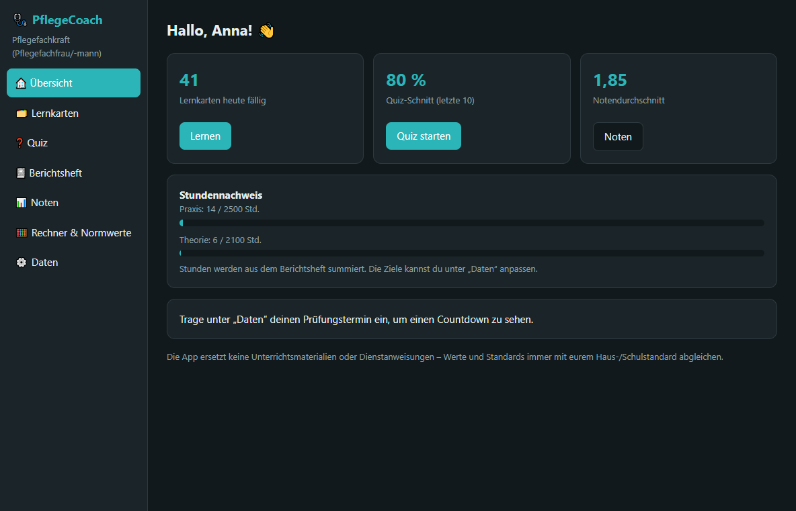
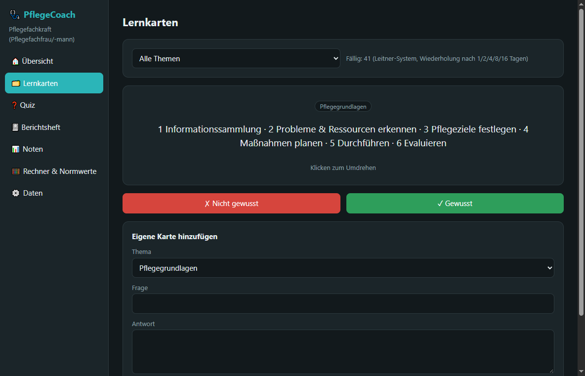
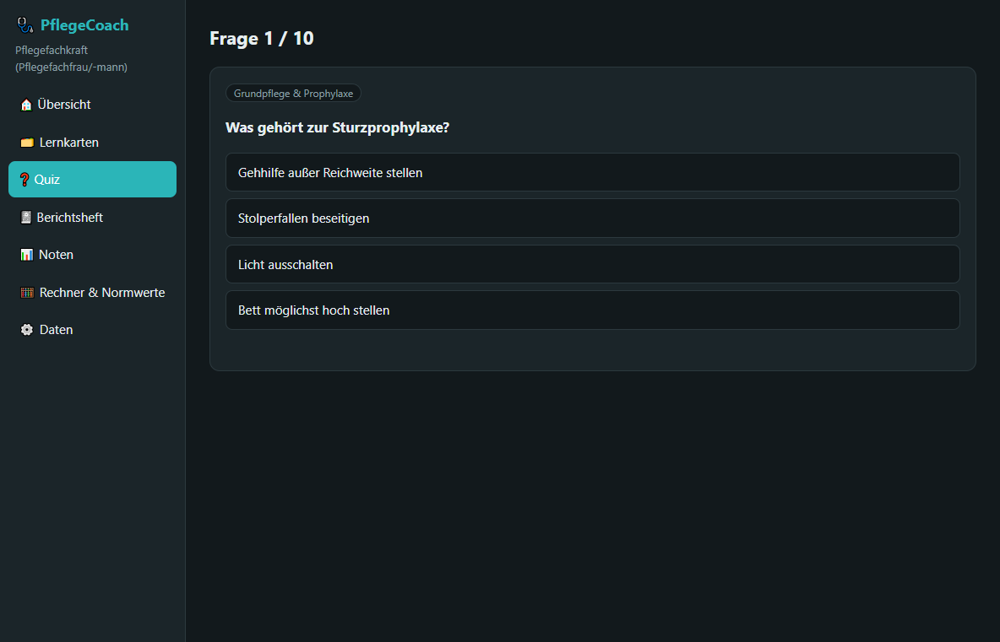
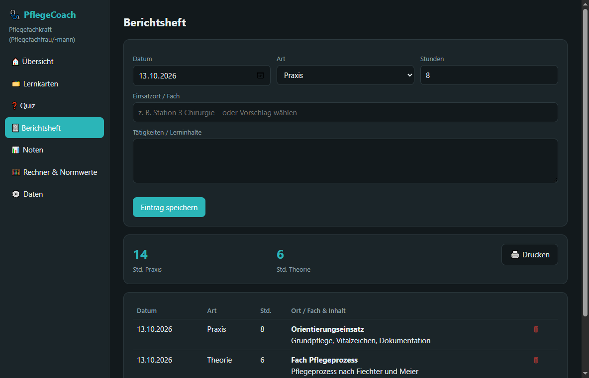
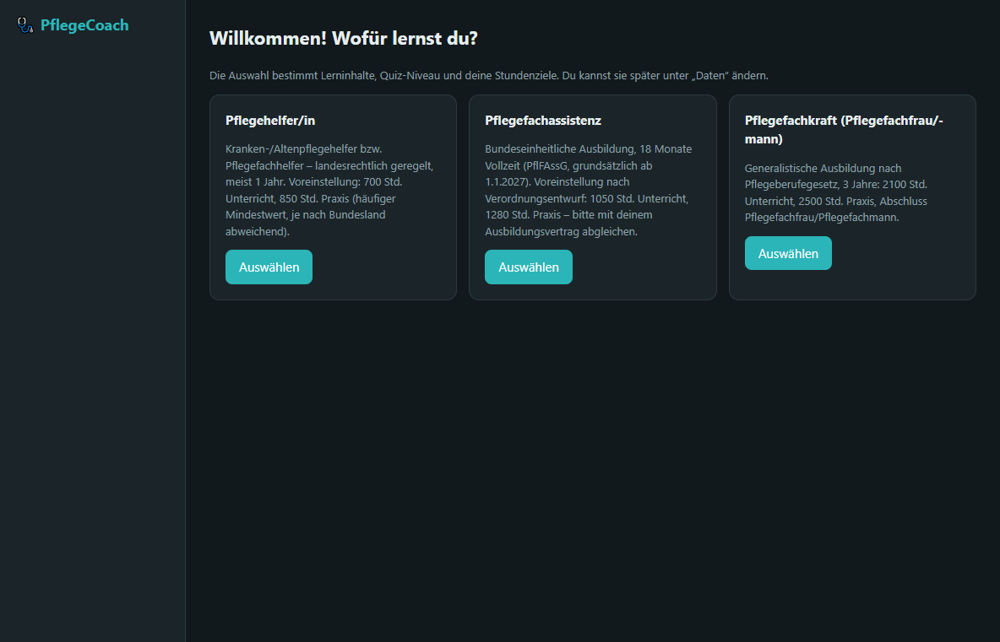
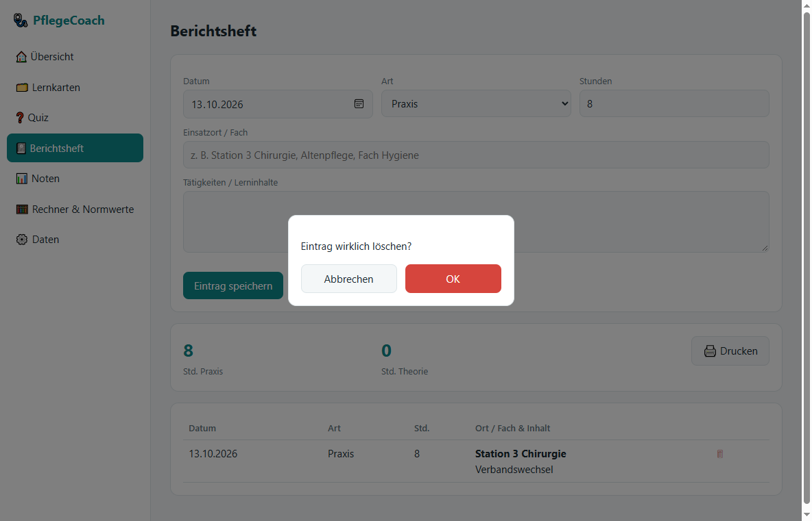

Lernkarten, Quiz, Berichtsheft mit Stundennachweis, Noten und Pflege-Rechner. Für Pflegehelfer/innen, Pflegefachassistenz und Pflegefachkräfte.

Kein Konto, keine Anmeldung. Deine Daten bleiben auf deinem PC.
Über 60 Karten zu Pflegegrundlagen, Prophylaxen, Hygiene, Recht und Notfall. Mit Wiederholung nach dem Leitner-System – und eigenen Karten.
Zehn Fragen pro Runde, nach Thema wählbar. Nach jeder Antwort gibt es eine kurze Erklärung. Dein Verlauf wird gespeichert.
Tätigkeiten und Lerninhalte eintragen, Stunden summieren lassen und die Liste ausdrucken. Mit Einsatzort-Vorschlägen für deinen Abschluss.
Fortschrittsbalken für Praxis- und Theoriestunden. Die Ziele passen zu deiner Ausbildung und lassen sich anpassen.
Noten mit Gewichtung erfassen und den Durchschnitt im Blick behalten.
BMI, Tropfenrate und Dosisberechnung zum Üben – dazu eine Tabelle mit Normwerten für Puls, Blutdruck, Temperatur und mehr.



Beim ersten Start wählst du aus, wofür du lernst. Inhalte, Quiz-Niveau, Rechner und Stundenziele passen sich an – jede Stufe enthält die darunter.
Grundpflege, Prophylaxen, Beobachten und Melden, Hygiene, Kommunikation.
Zusätzlich Vitalzeichen, Unterzuckerung, Delegation, Verbandwechsel und Rechner zum Üben.
Zusätzlich Pflegeprozess, Vorbehaltsaufgaben nach § 4 PflBG, Expertenstandards und Qualität.


Version 1.0 · für Windows 10 und 11 (64-Bit). Empfohlen ist der Installer.
Installiert PflegeCoach für deinen Benutzer, legt Startmenü- und Desktop-Verknüpfung an und bringt eine Deinstallation mit.
Entpacken und PflegeCoach.exe starten – ohne Installation. Der Ordner muss zusammenbleiben.
certutil -hashfile PflegeCoach-Setup.exe SHA256
| Betriebssystem | Windows 10 oder 11, 64-Bit |
|---|---|
| Benötigt | Microsoft Edge WebView2 Runtime – bei aktuellen Windows-Versionen meist schon vorhanden |
| Speicherplatz | ca. 1 MB für das Programm; deine Daten kommen dazu |
| Internet | Nur zum Herunterladen. Die App läuft komplett offline. |
| Rechte | Keine Administratorrechte nötig |
So installierst du PflegeCoach.
Kurz beantwortet.
Die Datei ist nicht mit einem kostenpflichtigen Code-Signing-Zertifikat signiert, deshalb warnt SmartScreen bei unbekannten Programmen. Du kannst die Echtheit prüfen: Vergleiche die SHA-256-Prüfsumme (siehe Download). Stimmt sie überein, klicke auf „Weitere Informationen“ und dann auf „Trotzdem ausführen“.
Lokal auf deinem PC unter %LOCALAPPDATA%\PflegeCoach. Die App selbst sendet keine Daten ins Internet. Unter „Daten“ kannst du jederzeit eine Sicherung als Datei exportieren und wieder importieren.
Ja, unter „Daten“. Dein Lernfortschritt bleibt erhalten. Die Stundenziele werden auf den neuen Abschluss gesetzt und lassen sich anpassen.
Über „Einstellungen → Apps → PflegeCoach → Deinstallieren“ oder über die Verknüpfung im Startmenü. Du wirst gefragt, ob deine Daten behalten werden sollen – vorausgewählt ist „behalten“.
Aktuell nur für Windows 10/11 (64-Bit).
Nein. PflegeCoach ist ein Lernhilfsmittel. Die Inhalte wurden nach bestem Wissen erstellt, ersetzen aber weder Unterricht noch Dienstanweisungen oder Haus- und Schulstandards. Vorschriften und Stundenzahlen können je nach Bundesland und Einrichtung abweichen.